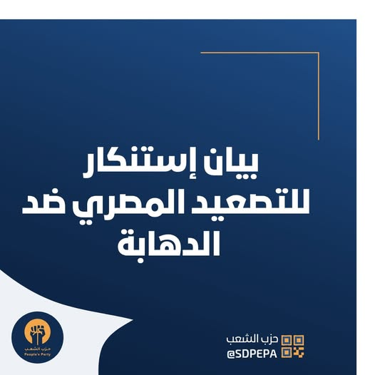

📢 بيان استنكار للتصعيد المصري ضد الدهابة
بسم الله الرحمن الرحيم
في ظل تصاعد الحملات الإعلامية الممنهجة والتصريحات الصادرة من مستويات رسمية في الجانب المصري، والتي تستهدف تصوير الشباب السوداني العاملين في قطاع التنقيب الأهلي (الدهابة) كعناصر إجرامية مسلحة.
نُصدر هذا البيان لنُدين ونستنكر بأشد العبارات هذه الاتجاهات التصعيدية والاتهامات الباطلة التي تفتقر إلى الموضوعية والدليل والقائمة على التلفيق.
إن هذه الحملات المبرمجة لا تخدم سوى تهيئة الأجواء لشن عدوان جديد واستهداف مباشر لسلامة أبنائنا العزل الذين دفعهم ضيق الحال وظروف الحرب والنزوح للبحث عن لقمة العيش الكريمة بالطرق السلمية المشروعة.
عليه نحن في حزب الشعب نعلن الآتي:
- رفضنا القاطع لمحاولات وصم الشباب الدهابة بالإجرام أو التخريب، ونؤكد أنهم مدنيون عزل يمارسون عملاً شريفاً لتأمين أسرهم في ظل ظروف إنسانية معقدة.
- نحذر من أن مثل هذه الخطابات الإعلامية والمبررات الأمنية قد تُستخدم كغطاء لارتكاب انتهاكات أو شن هجمات جديدة ضد المواطنين السودانيين على الحدود.
- ندعو الحكومة السودانية وكافة الجهات الحقوقية والأهلية المعنية لتحمل مسؤوليتها الكاملة في حماية المواطنين السودانيين في المناطق الحدودية، ومطالبة السلطات المصرية بوقف هذا التحريض الإعلامي المستمر.
ولا نامت أعين الجبناء ، وحفظ الله شبابنا سنداً وذخراً.
حزب الشعب - السودان

💬 آراء وتعليقات عامة الشعب حول البيان